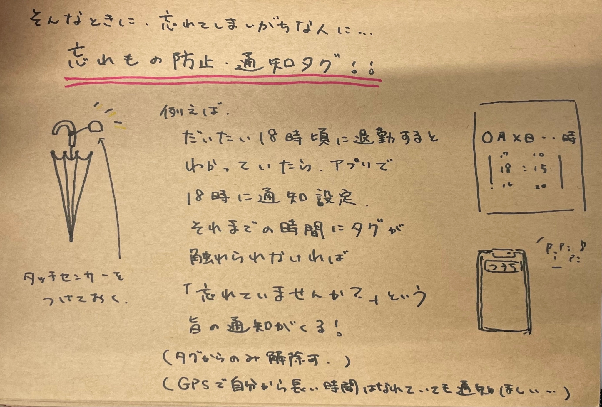
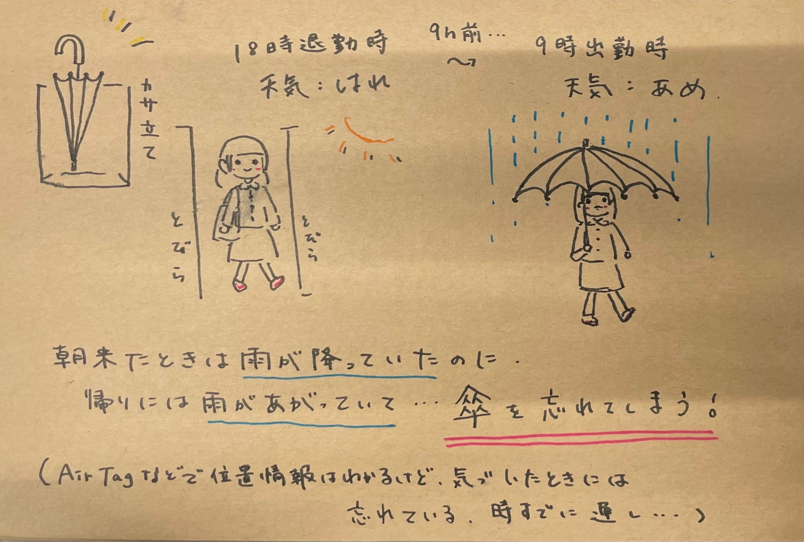

最終課題
班のメンバー
下枝
石塚
竜口
忘れ物防止タグ
タグに触らないでいるとラインに通知が届くシステム。タグに触る＝忘れないで持っている（タッチセンサーによる感知）


使用したマイコンボード
ESP32リンク
Arduino IDE(c言語)を使って書き込む
set upとloopがあり、set upは設定や関数を書き込み、loopで実際に動かすイメージ（おそらく）
Wi-Fiの接続などもset upでやる
プロジェクトノート
- アイデアスケッチ
- 必要な道具の確認
マイコンボードの使い方がわからず手こずった。書き込みの時ボタンを押す。
タッチセンサーも購入したがネットに繋ぐのにパソコンが必要なものだったため断念。esp32
- コードの書き込み
結局ぜんぶ先生にやってもらった。すみません。
- 本体をつくる
マイコンボードは充電ができないタイプだったのでモバイルバッテリーが必要なので大きめになってしまう。
- 動作確認
ラインに通知が来ることを確認。タッチした後こなくなるのも確認
完成動画